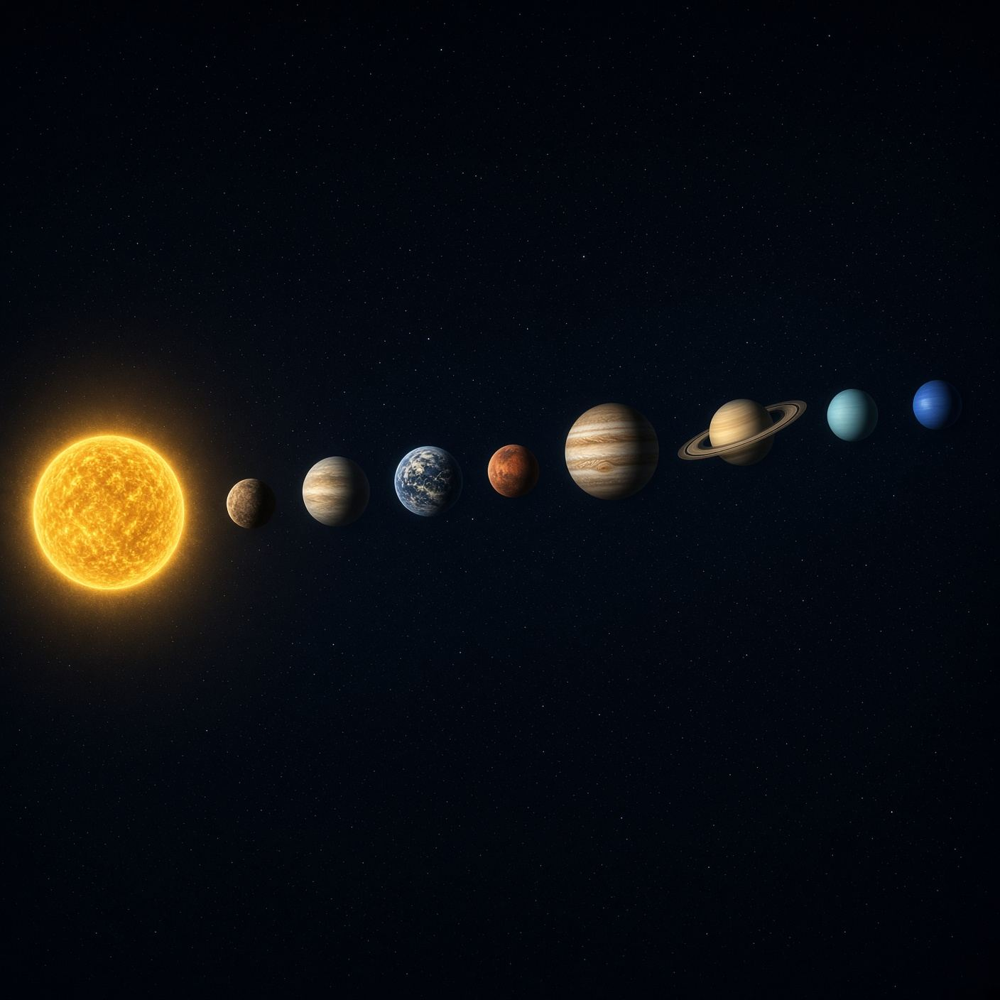
۰۱01
منظومه شمسیThe Solar System
هشت سیاره، قمرها، سیارکها و خورشید؛ سامانهای نزدیک با پرسشهای باز.Eight planets, their moons, the asteroids, and the Sun — a nearby system that still holds open questions.
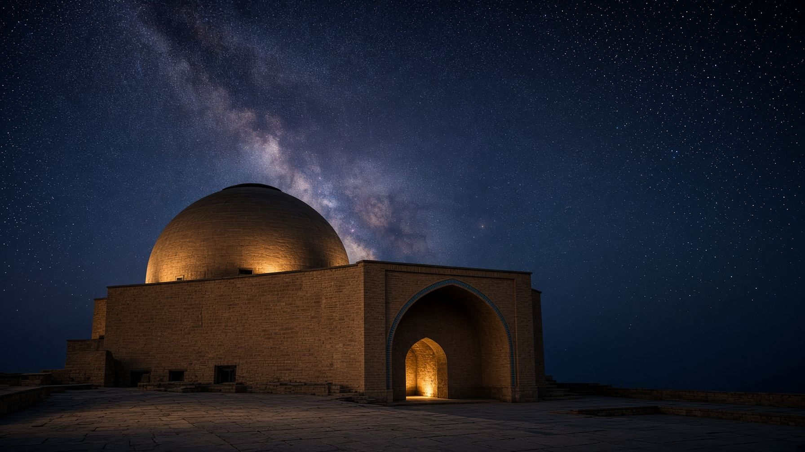
مؤسسه نجومی عمر خیامOmar Khayyam Astronomical Institute
مؤسسه نجومی عمر خیام؛ تلاقی دانش، اندیشه و شگفتیهای آسمان. Omar Khayyam Astronomical Institute brings together scientific curiosity, astronomical discovery, and Iran's rich legacy of celestial observation.
نمای هنری. این بنا رصدخانه واقعی نیست.An artistic view — not a photograph of a real institute observatory.
۰۱ — درباره مؤسسه01 — The Institute
نجوم، از دیرباز بخشی از تاریخ دانش در ایران بوده است. مؤسسه نجومی عمر خیام با الهام از این میراث و با نگاهی رو به آینده، بستری برای آشنایی با آسمان، گسترش دانش نجومی و تجربه شگفتیهای کیهان فراهم میکند. Astronomy has long been part of the history of knowledge in Iran. Inspired by that legacy and turned toward what is still unknown, the Omar Khayyam Astronomical Institute is a place to learn the sky, deepen astronomical understanding, and meet the cosmos with curiosity rather than spectacle.
از چشم غیرمسلح تا تلسکوپ؛ دیدن آسمان به عنوان یک مهارت.From the unaided eye to the telescope — looking at the sky as a skill.
مسیرهای روشن برای علاقهمندان، بیادعای اغراق.Clear paths for curious readers, without inflated claims.
تاریخ نجوم ایران، با وفاداری به آنچه منابع میگویند.Iran’s astronomical history, kept faithful to the record.
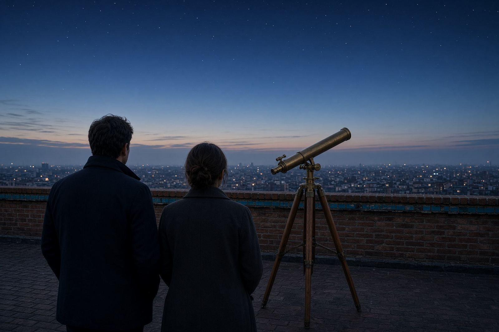
۰۲ — کاوش در کیهان02 — The Cosmos
هر مدخل دریچهای کوتاه است، نه دانشنامه. شرح بلندتر را در همان صفحه باز کنید.Each entry is a short opening, not an encyclopedia. A longer note opens on this page.

هشت سیاره، قمرها، سیارکها و خورشید؛ سامانهای نزدیک با پرسشهای باز.Eight planets, their moons, the asteroids, and the Sun — a nearby system that still holds open questions.
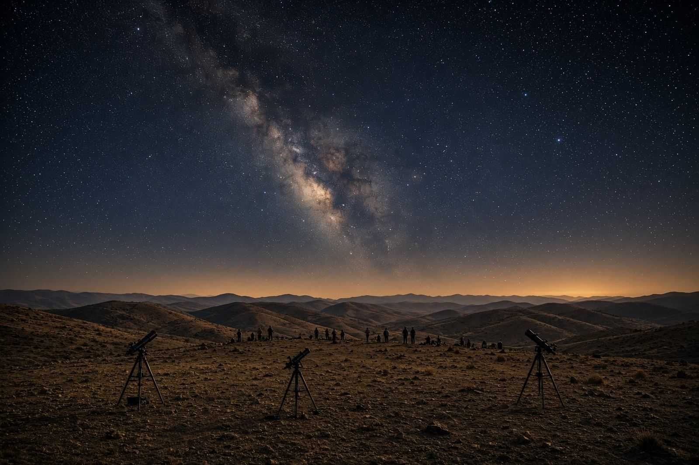
راه شیری تنها یکی از میلیاردها کهکشان است.The Milky Way is one galaxy among billions.
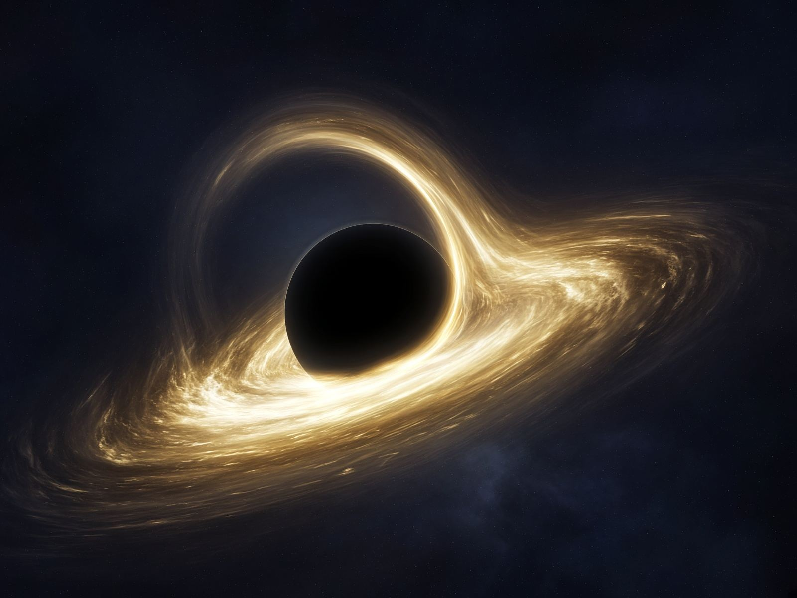
افق رویداد؛ نور از آن بیرون نمیآید.Light does not leave the event horizon.
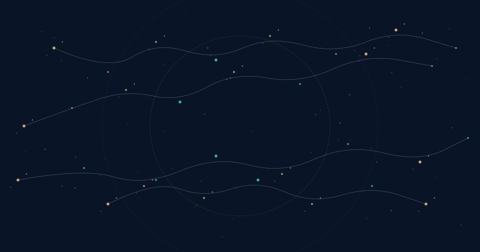
انبساط فضا، تابش زمینه کیهانی، و شبکهای که کهکشانها را به هم وصل میکند.The expansion of space, the cosmic microwave background, and the web that threads galaxies together. The drawing is a teaching plate, not a data map.
وقتی سیارهای از برابر ستارهاش میگذرد، نور ستاره اندکی کم میشود. منحنی پایین یک طرح آموزشی از روش گذر استWhen a planet crosses its star, the starlight dips slightly. The curve below is a teaching sketch of the transit method, not a real light curve.
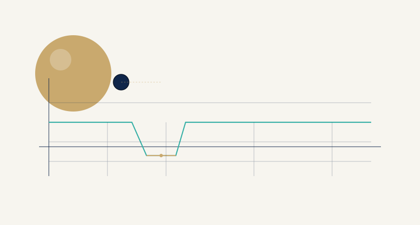
۰۳ — میراث نجومی ایران03 — Iran’s Astronomical Heritage
نجوم و ریاضیات در تاریخ علمی ایران جایگاهی روشن دارند. اینجا فقط به چند دستاورد شناختهشده اشاره میشود؛ نه نقلقول ساختهشده، نه افتخارِ بیمنبع.Astronomy and mathematics hold a clear place in Iran’s scientific history. What follows names a few well-attested contributions — no invented quotations, no unearned glory.
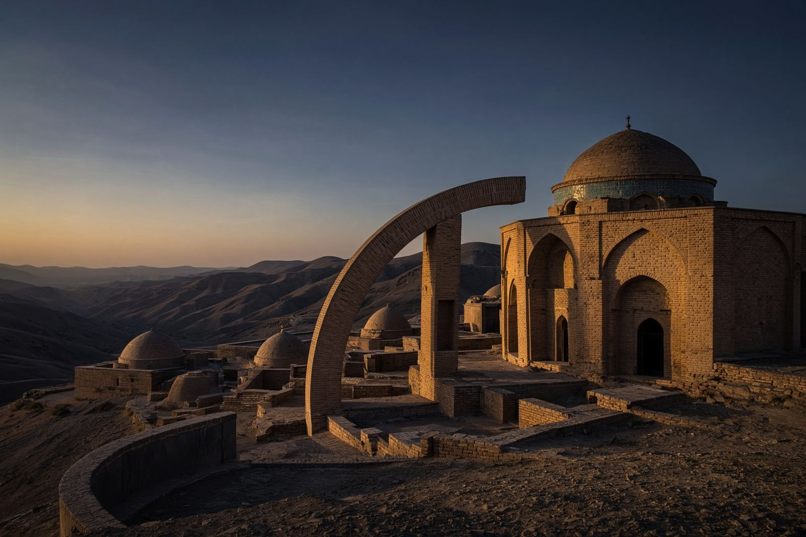
ریاضیدان، اخترشناس و شاعر نیشابور (۱۰۴۸–۱۱۳۱ میلادی). در روزگار ملکشاه سلجوقی در اصلاح گاهشماری شرکت داشت. تقویم جلالی، که در ۱۰۷۹ میلادی بنیان گذاشته شد، از دقیقترین تقویمهای خورشیدی است. در رساله جبر، راهحلهای هندسی معادلات درجه سوم را سامان داد.Mathematician, astronomer, and poet of Nishapur (1048–1131). He took part in the calendar reform under Sultan Malik-Shah. The Jalali calendar, established in 1079, is among the most accurate solar calendars ever devised. In his treatise on algebra he set out geometric solutions of cubic equations.
دانشمند خوارزم (۹۷۳ تا حدود ۱۰۴۸). در جغرافیای ریاضی، نجوم رصدی و اندازهگیری زمین کار کرد. التفهیم را برای آموزش مبادی نجوم نوشت و قانون مسعودی از جامعترین آثار نجومی اوست. برآورد او از شعاع زمین، با سنجش افت افق از فراز کوه، از دقیقترین کوششهای دوران خود است.A scholar of Khwarazm (973 to about 1048) who worked in mathematical geography, observational astronomy, and the measurement of the Earth. He wrote the Tafhim as an introduction to astronomy; the Qanun al-Masudi is his major astronomical compendium. His estimate of Earth’s radius, from the dip of the horizon seen from a mountain, ranks among the most careful of its age.
ریاضیدان و اخترشناس (۱۲۰۱–۱۲۷۴). رصدخانه مراغه حدود ۱۲۵۹ میلادی به سرپرستی او و با پشتیبانی هولاکو شکل گرفت و محل رصد و تدوین زیج ایلخانی شد. جفت طوسی دستگاهی هندسی است که از دو حرکت دایرهای، حرکت راستخط میسازد و بعدها در بحث مدلهای سیارهای مطرح شد.Mathematician and astronomer (1201–1274). The Maragheh observatory took shape around 1259 under his direction, with Hulagu’s patronage, and became a center for observation and for the Ilkhanid tables, the Zij-i Ilkhani. The Tusi couple is a geometric device that draws straight-line motion from two circular motions; it later entered discussions of planetary models.
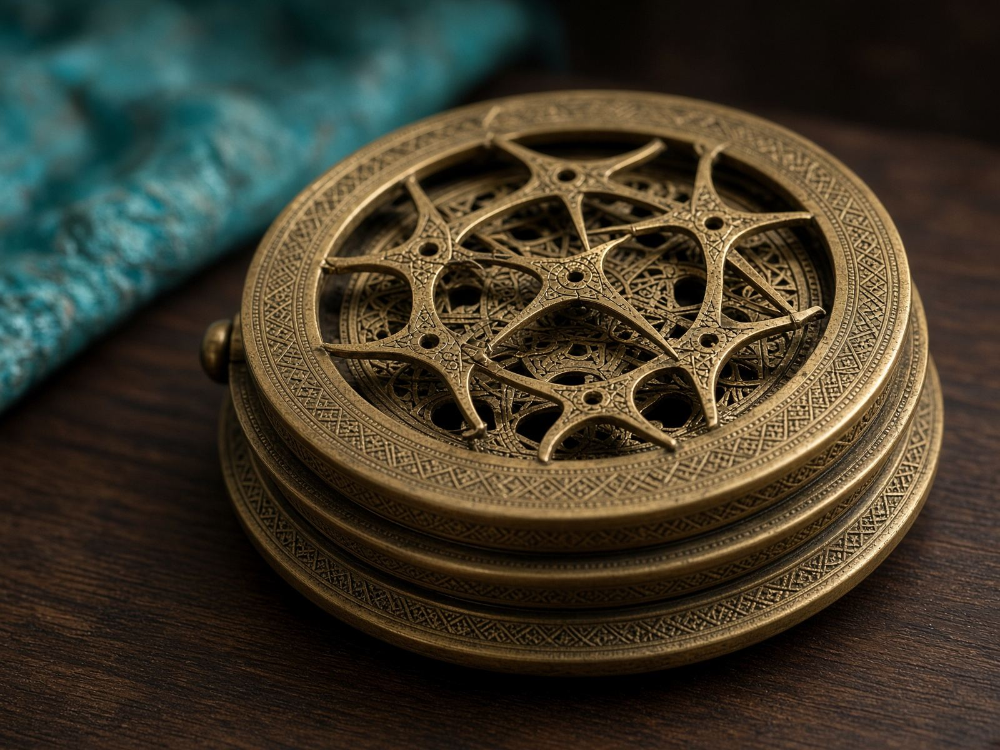
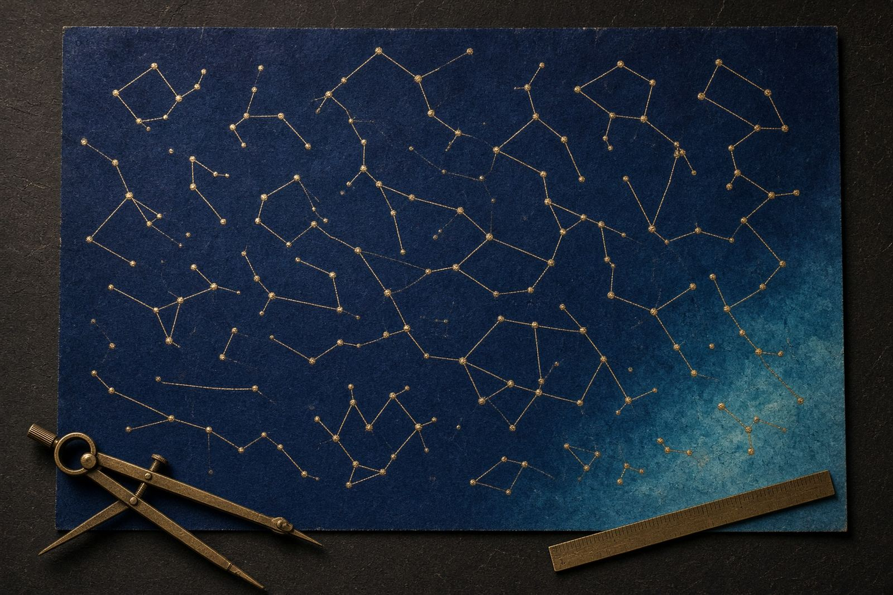
۰۴ — برنامههای رصدی04 — Programs
این سه عنوان فقط برای نمایش شکل صفحهاند.These three entries show how a program list can read. They are not real events, open registrations, or a current schedule.
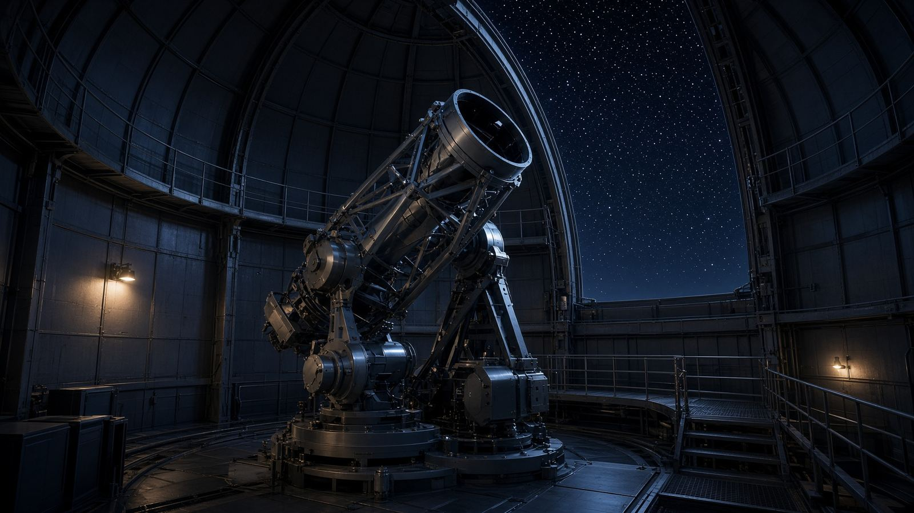
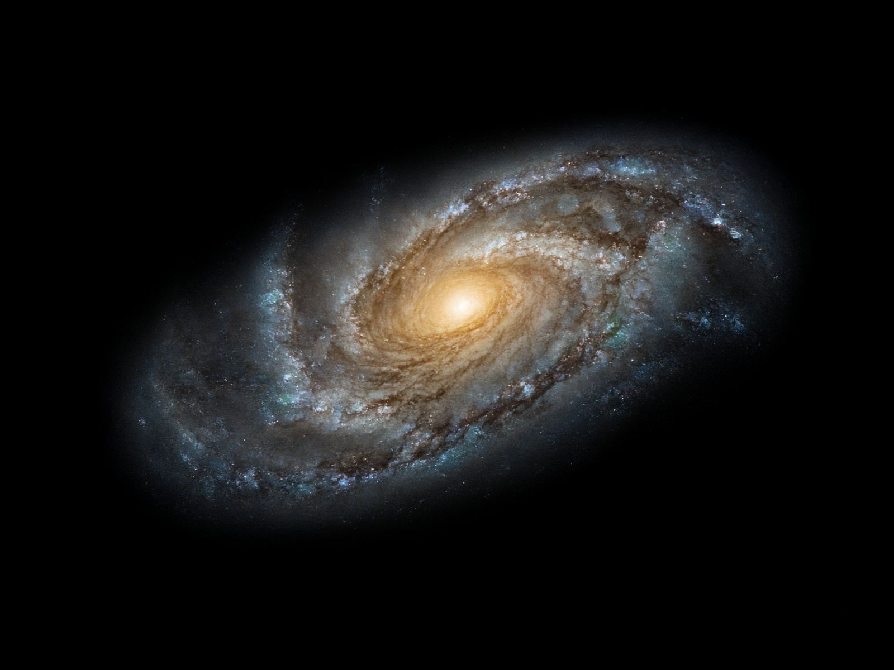
نمونه تحریریهEditorial sample · not a live feed
۰۵ — تصویر نجومی05 — Astronomical image
تاریخ نمونه: ۱ فروردین ۱۴۰۳Sample date: 20 March 2024
در کهکشانهای مارپیچی، بازوها جای زایش ستارهاند و خطوط غبار، نور را در طولموجهای کوتاهتر بیشتر میگیرند. هسته اغلب پیرتر و زردتر دیده میشود.In a spiral galaxy the arms are where stars are forming, and dust lanes dim shorter wavelengths of light. The core often looks older and more golden. This frame is an artistic rendering made for the page — not a calibrated observatory plate, and not today’s image from a live service.